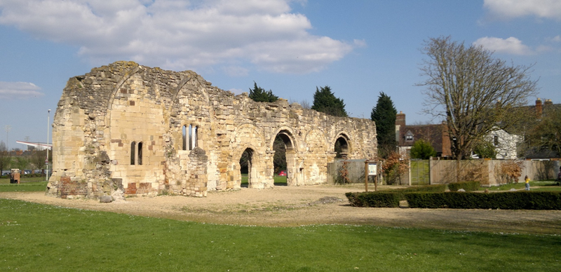

Æthelflæd, Lady of the Mercians may have been written out of history, but today we can find evidence of her life and achievements in many places.
GLOUCESTER – ÆTHELFLÆD'S CAPITAL
A good place to start is Gloucester, her 'capital'. She and her husband Æthelred established the main court of Mercia in Gloucester, reinforcing the town's Roman defences and encouraging trade. Just outside the town walls, she built royal residences at Kingsholm and founded St Oswald's Priory where she and Æthelred were buried — all as described in King Alfred's Daughter.
Æthelred, Æthelflæd's husband, was from the Hwicce people who originated around Gloucester. As the Lord of the Mercians, he fought alongside King Alfred against the Vikings, and his reward was the king's daughter as his bride in 887 AD. She was a teenager, he an experienced warrior at least 10 years her senior, but she soon shared the burden of running a state still at war.
Gloucester had been a thriving Roman fortress and town until the fifth century, but when Æthelflæd arrived from her home in Winchester, it would have been a ramshackle collection of derelict ancient buildings, wooden huts and working farms scattered inside the crumbling walls. She set about restoring it as one of her first 'burhs', or fortified townships. The old Roman walls were repaired on three sides and extended down to the River Severn, which formed a protective fourth flank to the northwest. Access was through three renovated stone gates in the walls, and over the river by a town bridge which stood where it does today.

Inside the walls, Æthelflæd used the template used by her father, Alfred, to create a street layout fit for both military and civilian purposes. Four main streets connected the gates and the bridge to a crossroads in the centre. Smaller streets ran off them like fishbones where houses were built for traders and warriors alike. Today, you can walk along roads such as Longsmith Street where metals were worked, and St Aldates where the cattle market stood, knowing that 1100 years ago, Æthelflæd and her family also travelled the same path.
At Kingsholm, close to the site of an old Roman fort, archaeologists have discovered evidence of a late Saxon timber building which is thought to be Æthelflæd's palace, and perhaps the main centre of Mercian government at this time.
She built a new minster just outside the walls, dedicated at first to St Peter, later to St Oswald once she had obtained his relics from within the Danelaw — (as told in King Alfred's Daughter). She and her husband chose to be buried there: excavations in the 1970s revealed an ornate 10th century carved slab that may have once covered a royal grave, but the exact location of the Lord and Lady of the Mercians remains unknown. The ruins of the Abbey have been recently renovated and stand today as a monument to Æthelflæd's achievements in the early development of the city. Her life was celebrated in Gloucester with a pageant on the 1100th anniversary of her death in 2018.
This is how Æthelflæd describes the building of the Abbey in the novel, King Alfred's Daughter:
"I little thought that the abbey that I founded as our family church in Gloucester would have the impact it did. Yet so many events that followed had their roots in that simple decision to build a monument to God. We sited the abbey by the river, between the residence I had built for the family at Kingsholm and the newly repaired walls of Gloucester. The fields around the town were scattered with the ruins of buildings left by the Romans and we used the plentiful stone to create a church. From the rubble of past generations, the masons skilfully raised majestic walls and gracious arches, and constructed a most beautiful House of God. We named it after St Peter but, as I will recount, we had cause to change that later. When my earthly toils are done, I have chosen to lie there, in my own modest chapel, rather than the grandiose mausoleum that my brother has built in Winchester."
— Excerpt from King Alfred's Daughter, The Book Guild, 28th March 2023